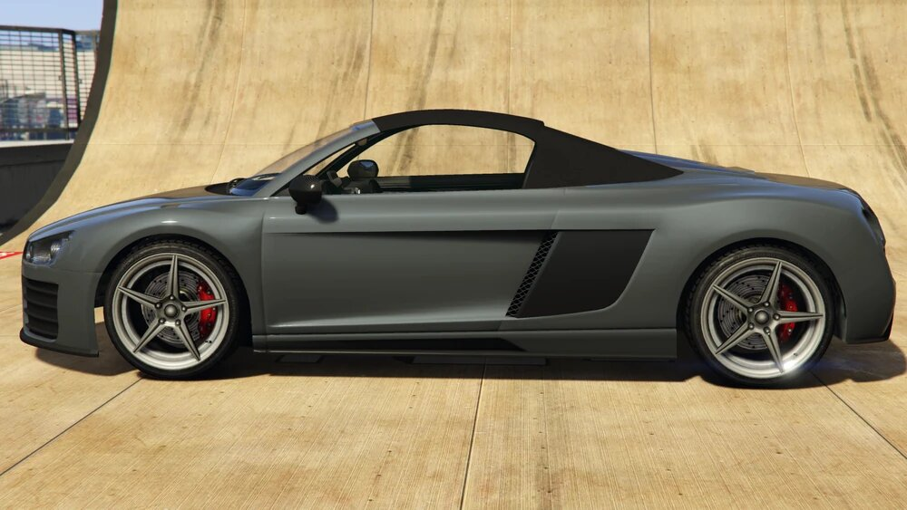
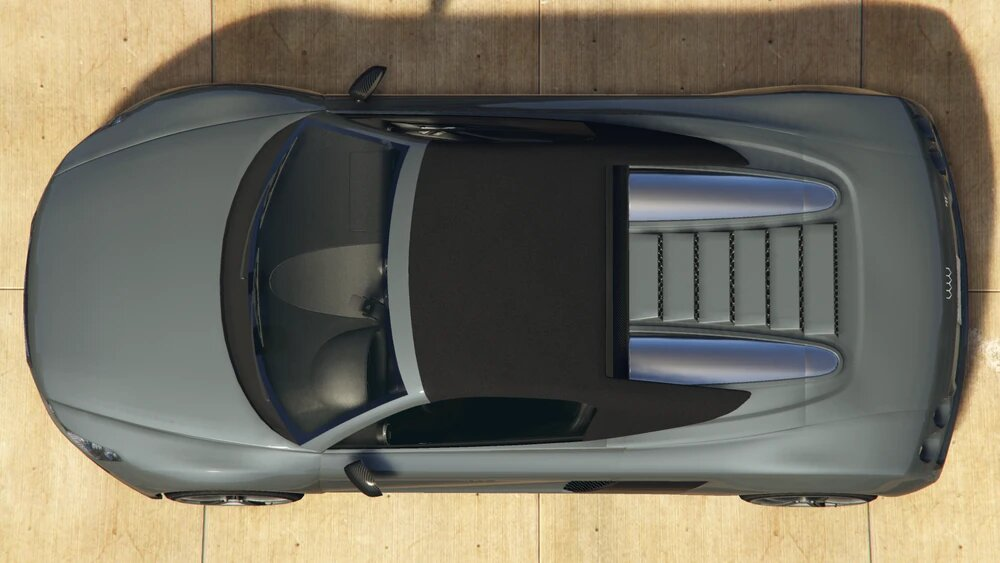

<section class="auto">
  <div class="container">
    <div class="auto-content">

      <div class="auto-content__introduce ">
        <h2 class="auto-content__title">{{ data.title  }}</h2>
        <div class="auto-content__cost">{{ data.price }}</div>
      </div>

      <div class="auto-content__flex">
        <div class="auto-content__img">
          <div class="auto-content__img-main">
            
          </div>

          <div class="auto-content__img-submain">
            
            
            
            
          </div>
        </div>

        <div class="auto-content__info">
          <div class="auto-content__description">
            Once you sit in this car, you won't want to drive anything else. Great in the snow. Not really, you'll probably die if you take this overpowered beast anywhere near moisture. Luckily, you live in a desert.
          </div>

          <ul class="auto-content__list">
            <li class="auto-content__list-item  flex-row">
              <h3>Class</h3>
              <div>Sports</div>
            </li>

            <li class="auto-content__list-item flex-row">
              <h3>Type</h3>
              <div>Civilian car</div>
            </li>

            <li class="auto-content__list-item flex-row">
              <h3>Body style</h3>
              <div>2-door sports car/coupe</div>
            </li>

            <li class="auto-content__list-item flex-row">
              <h3>Capacity</h3>
              <div>2 (driver and passenger)</div>
            </li>

            <li class="auto-content__list-item flex-row">
              <h3>Manufacturer</h3>
              <div>Obey</div>
            </li>

            <li class="auto-content__list-item flex-row">
              <h3>Price</h3>
              <div>$120,000</div>
            </li>
          </ul>
        </div>
      </div>

      <article class="auto-content__text">
        <h2>Influence</h2>
        <div class="line"></div>
        <h3>HD Universe</h3>
        <p>
          The 9F's design appears to be based on the 2007-2013 Audi R8 Coupé, with elements from the 2007-2013 Audi R8 Spider seen in the side vents and exhausts, along with the Audi R8 Le Mans Concept seen in the front and rear bumpers, as well as the side skirts. The headlights are similar to the Mercedes-Benz CLS-Class (C219), while the tail lights appear to draw inspiration from the Noble M600. The five-spoke alloy wheels are similar to the ones found on the Ferrari 458 Italia.
        </p>
      </article>


      <article class="auto-content__text">
        <h2>Design</h2>
        <div class="line"></div>
        <h3>Grand Theft Auto V and Online</h3>
        <p>
          The 9F takes on a typical sleek, aerodynamic sports car design, characterized by large front grille and intakes, its distinctive twin set of two taillights, and its several carbon fiber accents throughout. Under the front trunk lid, an Obey and 9F logo can be seen printed on the body below the trunk space.
        </p>

        <p>
          The interior of the car in the enhanced version is very detailed, using the "Super GT" interior textures and dial set shared with cars like the Rapid GT and the F620. The Obey emblem can be found on the horn cap and the passenger glove compartment. The interior features two randomly spawning extras that cannot be added in Los Santos Customs:
        </p>

        <ul>
          <li>
            <p>A fan filter for the center left climate vent on the dashboard. Labeled "extra_ten" internally.</p>
          </li>

          <li>
            <p>A smartphone mount facing the driver, and a fan filter for the center right climate vent on the dashboard. Labeled "extra_12" internally.</p>
          </li>
        </ul>

        <p>
          The primary colour of the car is applied on the bodywork and the stitches on the interior, while the secondary colour is applied to the rear-quarter panels of the greenhouse area. The wheel rims are similar to the "Lozspeed Mk.V" sport wheels available in Los Santos Customs.
        </p>
      </article>

      <article class="auto-content__text">
        <h2>Performance</h2>
        <div class="line"></div>
        <h3>Grand Theft Auto V and Online</h3>
        <p>
          The engine in the rear is placed in a mid engine, all wheel drive configuration (20-80, front to rear distribution) and appears to be loosely based on a V8 cover, coupled to a 6-speed gearbox. The sound of the engine note seems to be powerful, further supported in the enhanced version, where it also shares its engine sound with the Adder.
        </p>
      </article>
    </div>
  </div>
</section>
